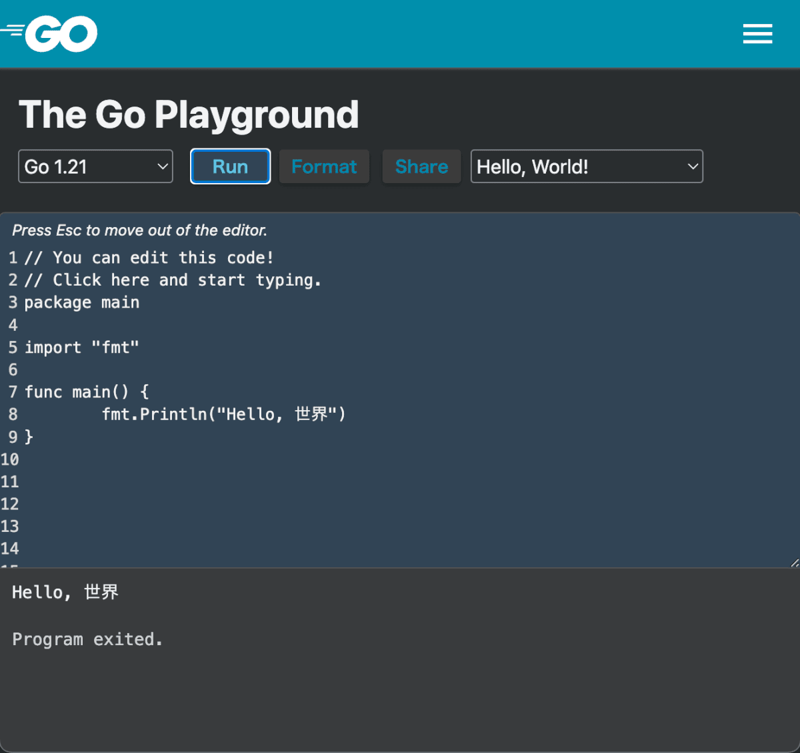

第一章 关于这本书

1.1 引言
欢迎来到《从零开始的游戏编程：Go 语言与 Ebitengine》。
本书旨在为完全没有编程经验的超初学者提供指导，以“连老妈都能理解”为目标，循序渐进讲解如何从零开始制作游戏。
希望通过本书，让你体会到游戏编程的乐趣。在这本书中，我们将最快的路线，从编程基础走到游戏开发。
· 极其易懂、细致解说如何配置编程环境
· 一边让画面动，一边学习编程
· 学习制作各种类型的游戏，都能用到的泛用技术
以上就是我们的目标。如果读者里面有：
· 环境构建太难搞，总是半途而废
· 黑窗口好无聊，啥时候才能有画面
· 我学的东西，真的对制作游戏有帮助吗
如果你这样想，恭喜，这本书正好适合你。另外本书还推荐给那些“游戏引擎很卡，在我的破电脑上跑不起来”的人。
笔者入门游戏编程，用的是名为 BASIC 的古老编程语言。尽管 BASIC 仍然是一种伟大的语言，但与现代游戏开发相距甚远。
在现代，能够实现前面这些这些宏伟目标的东西，笔者认为除了本书中提到的 Go 语言和 Ebitengine，可以说别无他选。
如果有人因此一辈子用 Go 和 Ebitengine 制作游戏，那将是无上的喜悦。但即使不是这样（也就是说，用其他引擎制作游戏或没去做游戏方面的编程），我也相信在这里学到的知识，一定会对你有所帮助。
我虽然说了很多，但如果您能当作轻松的业余消遣来读，相信也一定会很有趣😉
1.2 这本书的使用方法
这本书不仅可以在 PC 上阅读，也可以在手机上阅读。不过，实际编程需要用 Windows PC 或 Mac。
虽然（日文版）没有 Zenn 的账户也可以阅读，但如果登录 Zenn 账户，则会有阅读进度记录等功能，因此推荐注册。
动作确认是在 Windows 10 和 macOS Ventura 上进行的。如果有任何问题，请在以下社群中告知我们。
1.3 关于编程社群
您可以在 Ebitengine 官方 Discord 服务器的 #questions-ja 频道中，直接向作者 @eihigh 询问。 任何小问题都非常欢迎！
此外，我们还不定期举办轻松的学习交流会“Ebitengine ぷちConf”，最近的一次在 8 月 30 日举行。
详情请点击这里。欢迎初学者参加，请随时加入我们！
1.4 请您给予支持
全编免费阅读，但如果您从（日文版）书籍目录画面下方的“徽章（バッジ）”处给作者打赏，作者会非常高兴！
1.5 其他学习资料
学习 Go 语言的资料，除了这本书之外还有很多选择。以下是其中的一部分，希望对您有所帮助。
GO指南
A Tour of Go 是 Go 官方提供的学习内容（链接是由志愿者翻译的中文版）。 它的特点，是可以使用后面提到的 Go Playground 的功能，一边在左侧阅读解说，一边在右侧编写并即时运行。 虽然有些内容假设读者有其他语言的编程经验，但依然是快速掌握 Go 的绝佳选择。

Go Playground
Go Playground 是 Go 官方提供的代码执行环境。可以在浏览器上编写并执行，或通过 Share 按钮发布 URL，共享编写的代码片段。
不过由于 Go Playground 无法响应用户输入，因此不适合做游戏。适合快速检查语法或共享代码片段。 
Go语言编程 完全入门（日语资料）
《Go语言编程 完全入门》是由致力于 Go 普及的 tenntenn 先生编写的学习内容。
内容面向初学者，并且附有实际动手学习的实践环节，非常易于理解，推荐阅读。

1.6 学习时的注意事项
因为 Go 始终在不断发展，某些教程可能因为信息过时而导致“照着做却不成功！”的情况发生。这本书也不例外，所以请尽量参考最新信息。
1.7 编程是什么，游戏编程是什么
程序究竟是什么？我将尝试以老妈也能理解的方式解释。
程序是指示计算机执行操作的工具。例如，编写指示计算机“按顺序显示 1 到 10 的数字”的程序，计算机就会按顺序显示 1 到 10 的数字。
个人电脑、智能手机、游戏机等，所有计算机都由程序控制。如果没有程序，计算机就只是一个空壳。
游戏编程，就是在编写作为游戏运行的程序。将图像显示在屏幕上、发出声音、对输入作出反应、移动角色等，这些都由程序控制与运行。
此外，游戏编程的范围，不仅限于我们手头的电脑、手机和游戏机上运行的程序——
互联网某处的“游戏服务器”、为游戏开发者提供的“辅助工具”、以及被各种游戏使用、支撑开发的“游戏引擎”等等，游戏编程涉及多个领域，在这里我们不扩展讨论了。
不过，现代游戏中这些内容都是不可或缺的，因此有意将游戏编程作为职业的人，建议您保持好奇心并积极学习。
在这个连载中，我们将从零开始学习游戏编程。请务必体验一下从无到有，写出一款游戏的感觉。
1.8 Go 语言与 Ebitengine 概述
在本连载中，我将简要介绍将要使用的技术。对技术话题感兴趣的读者可以阅读一下。
Go 语言是 2009 年正式发布的相对年轻的编程语言。具有语法简单、环境搭建轻松、像脚本语言一样容易执行这样的“易用性”，与可以快速编译与执行速度快这样的“高性能”等特点。
这种语言，还因由 C 语言的发源地贝尔实验室的资深程序员开发而闻名，Go 语言一方面保留了 C 语言的特征，但在吸取 C 语言的经验和教训的基础上，去除了复杂性，是一种现代化的编程语言。
Go 主要用于 Web 与云服务领域，但 Go 当然也可以制作游戏。在这里，我们将使用 Go 加 Ebitengine 这个库（库：为了让大家分享，而编写的通用游戏组件）来制作游戏。
Ebitengine（エビテンジン）是由日本人星一（Hajime Hoshi）开发的一个用 Go 开发游戏的库。
它支撑了许多著名的作品，如《梅格与怪物》、《熊先生的餐厅》，以及备受期待的新作《SAEKO: Giantess Dating Sim》。 游戏特点与 Go 的特性有很多共同之处，比如简单易用，运行速度快。
Ebitengine 的另一个值得大书特书的特点，就是其支持平台范围广了。
它不仅支持 Windows、macOS、Linux 等桌面环境，还支持使用WebGL在 Web 浏览器上运行 ，以及发布成为 iOS 和 Android 上的智能手机应用，甚至还能移植到 Nintendo Switch 和 Xbox 这些主机上。
它让用 Go 语言编写的游戏，可以轻松移植到各种平台。
Ebitengine 官方网站上发布了大量游戏示例，在浏览器上展示了游戏的的效果，代码也可以直接复制粘贴运行。如果您有编程经验，可能只需浏览一遍示例就能掌握用法。请务必查看。

Ebitengine 是专注于 2D 游戏的引擎。虽然不支持 3D（因此可以保持简易），但也有像 Tetra3D 这样基于 Ebitengine 的黑科技 3D 引擎，如果感兴趣的话可以去看看。
1.9 许可证
Go gopher（GO吉祥物地鼠）图片，采用创意共享 4.0 署名许可。阅读本文，以获取更多详细信息：https://blog.golang.org/gopher
本文用了 Egon Elbre 氏提供的 gopher 图像（ https://github.com/egonelbre/gophers ），该图像以 CC0 1.0 Universal 许可提供。
本书的原始图像可以在个人学习范围内自由使用。
1.10 关于中文翻译
本书在原作者eihigh的许可下翻译，译文同样限定在个人学习范围内自由使用（也就是非商用）。
为了便于中文读者理解，译文中添加了一些段落，替换了部分截图，并不完全与原文一致。